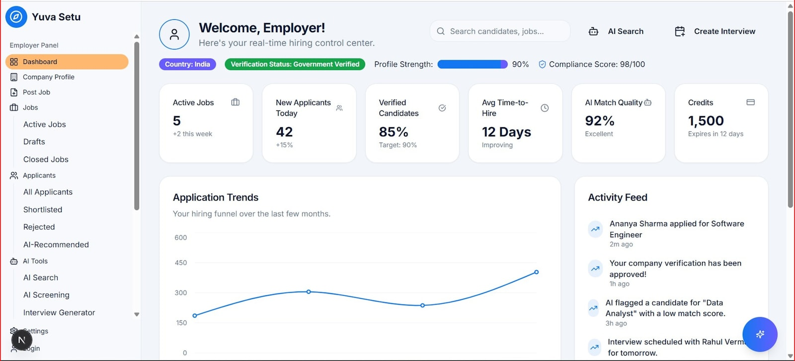
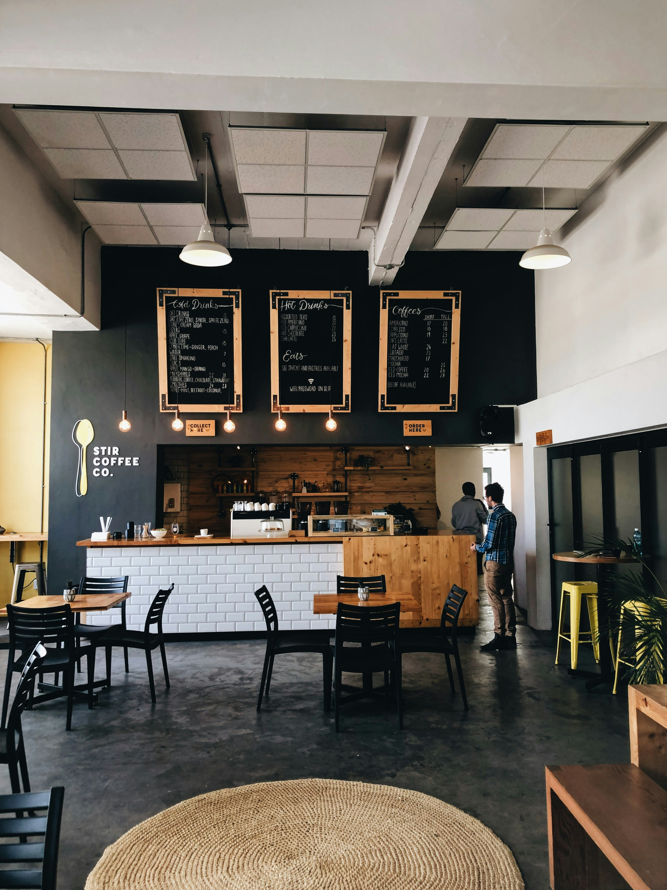

About
Hi, I'm Raymond
Data Analyst at Amdari Inc. UK, turning SQL queries and Power BI/Tableau dashboards into
decisions that stick — work that's cut manual reporting effort by 40% and data retrieval
time by 30% in my current role. My background spans warehouse operations, logistics, and
supply chain management, which grounds my analysis in how the numbers actually play out
on the floor. BSc Economics (Ekiti State University), certified in Data Analytics through
10Alytics.


Multi-page Power BI dashboard analysing 2023 sales data for a pharmaceutical distributor
generating $71M in revenue at an 82% profit margin across
200 customers in 6 countries.
- Doxycycline and Lisinopril identified as top-revenue drugs
- Montelukast flagged as high-volume but critically low-margin ($32K profit on 7,500+ units)
- Canada dominates revenue while the US underperforms relative to market size
- Seller-type customers drive 89% of total revenue, confirming a B2B-heavy model — recommended portfolio rationalisation and expansion into European preferred-customer programmes
Dual Tableau dashboard analysing the regional operations and workforce performance of a
premium artisanal chocolate brand operating across Europe.
- Margin risk flagged: COGS (£2.77M) exceeded net profit (£2.36M), compounded by a 4.4% cancellation rate
- Delivery success ranged from 100% (Auvergne-Rhône-Alpes) to 92.7% (Brussels and Hamburg)
- Only 6 of 20+ salespeople hit the £100K profit target; Karlen McCaffrey identified as a top-performer outlier
- Website channel drove 45.5% of sales impact, far outpacing social media — recommended supplier renegotiation and a tiered commission structure

Comprehensive Excel dashboard for a multi-location café chain, covering sales trends,
product performance, stock levels, and customer sentiment across 1,003 customers and
4 city locations.
- Muffins and Cappuccinos were the top revenue drivers; Suburban outperformed Downtown, Airport, and Uptown
- Negative sentiment (1,048) outpaced positive (960)
- Sharp Q4 decline: sales fell from £1,200+ in September to a year-low in November
- Recommended seasonal promotions, product bundling, and location-specific strategy to close the gap
Two-year operational analysis of bed occupancy across Albion Care Network — 5 hospitals,
8 wards, 760 beds, and 131,000 admissions — replacing fragmented spreadsheets with a
single Power BI view of where pressure sits.
- Average network occupancy sits at 71.9%, but every inpatient ward hits 100% at peak, and Orthopaedics B runs effectively full 48% of the year
- Emergency admissions drive occupancy (correlation 0.62); elective surgery barely moves it (0.13) — pressure gets absorbed through late cancellations, reaching 11.9% in winter
- Staffing runs inverse to demand (correlation -0.20): February is the busiest month of the year and the most thinly staffed, with safe-ratio breaches hitting 6.2%
- Long stays beyond 7 days are just 8.7% of admissions but consume 26.4% of all bed-hours — the single highest-impact lever identified
Executive Power BI review of a food-delivery platform's revenue, retention, and delivery
operations, built on a 10-table PostgreSQL schema across San Francisco, Los Angeles, and
New York.
- Bulk meal stocking generates ~58% of revenue at only ~4% of delivery cost, out-earning standard orders by ~$400K while costing ~$70K less to deliver
- Retention collapsed from 19.24% in Q1 to 4.00% in Q4, masked by new-user growth that pushed active users from 1,198 to 1,485
- Dinner dominates revenue at ~$1.4M (54% of the total); Beverages and Snacks stay under 15% despite high margins
- Recommended a bulk-first model with RFM-driven retention and phased-out car deliveries, targeting a 30% cut in delivery cost